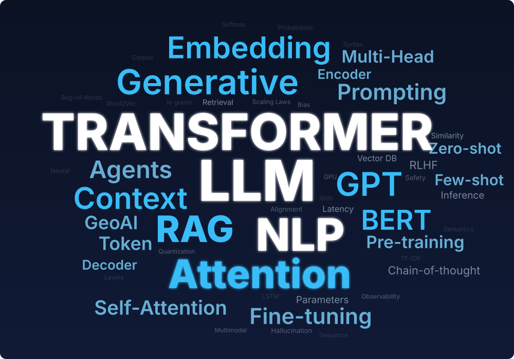
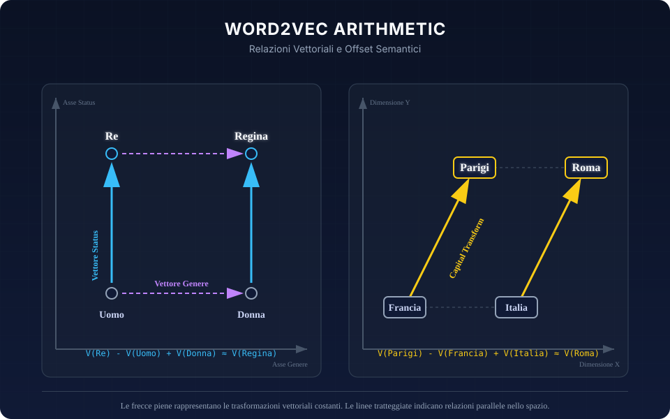
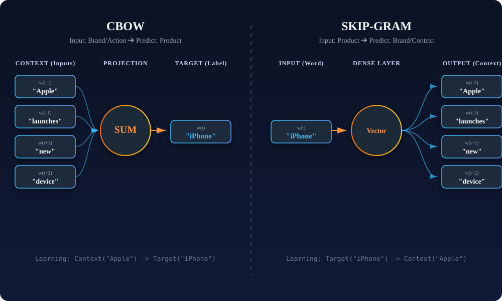
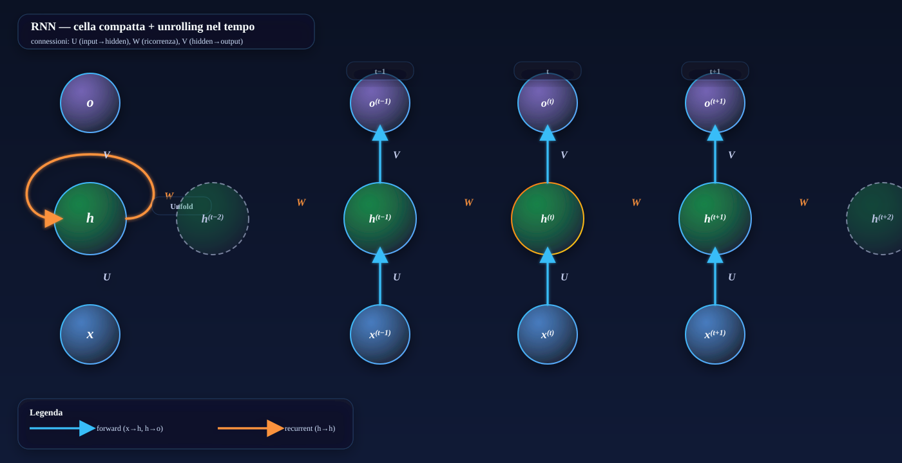

Dai modelli NLP classici ai LLM

Benvenuti alla terza puntata del percorso per come diventare un GeoAI engineer. In quest'articolo ci parleremo di storia e ci focalizzeremo sul come siamo arrivati a parlare di GPT, Gemini & co. e da dove siamo partiti. Non solo, non ti preoccupare!
Buona lettura!
Introduzione
Negli ultimi decenni il trattamento automatico del linguaggio (NLP) ha vissuto un'evoluzione straordinaria, passando da metodi statistici "semplici" ai moderni Large Language Model (LLM) con miliardi di parametri.
Questa rivoluzione non è stata solo storica, ma soprattutto architetturale: nuove idee (in primis parleremo di Transformer) hanno superato limiti prima considerati insuperabili. In questi due articoli, ripercorriamo le tappe fondamentali di questa evoluzione, dai modelli NLP classici agli LLM odierni, analizzando per ogni fase le scelte progettuali, i limiti incontrati e i trade-off.
In particolare, in questo articolo ripercorriamo l’evoluzione dell’NLP prima della svolta dei Transformer: dai metodi statistici (Bag-of-Words, TF-IDF, n-grammi), agli embedding distribuzionali, fino ai modelli ricorrenti come RNN, LSTM e GRU.
L’obiettivo è capire non solo cosa è cambiato, ma perché i metodi precedenti ai Transformer hanno iniziato a mostrare limiti strutturali su contesto lungo, scalabilità e parallelizzazione. Questi limiti preparano il terreno al passo successivo, che affronteremo nel prossimo articolo.
NLP prima del Deep Learning
Prima dell'era deep learning, l'NLP era dominato da metodi statistici e basati su feature manuali.
Se ti sei mai avvicinato al mondo dell'Elaborazione del Linguaggio Naturale (NLP), probabilmente ti sei imbattuto in definizioni tecniche, magari anche incomprensibili.
Partiamo dal Bag-of-Words (letteralmente "Sacco di Parole"), uno dei metodi più antichi per insegnare a un computer a leggere.
Il "frullatore" (Bag-of-Words) e il filtro (TF-IDF)
Immagina di voler spiegare a un computer la differenza tra due frasi. Il computer non sa cosa sia la grammatica, né conosce il soggetto o il verbo. Come facciamo?
Il metodo Bag-of-Words (BoW) fa qualcosa di semplice ma anche abbastanza efficace:
Prende la tua frase.
Ritaglia ogni singola parola con le forbici.
Butta tutto in un sacchetto e lo agita.
Quello che rimane è un elenco di ingredienti senza ordine.
Esempio:
Frase originale: "Il gatto insegue il topo"
Bag-of-Words: { "gatto": 1, "insegue": 1, "il": 2, "topo": 1 }
Il computer guarda nel sacchetto e dice: "Ok, questo testo parla di gatti e topi". Direi molto semplice, te che dici?
Il problemino che si paga con questa semplicità è che l'ordine non conta, perché si perde completamente la struttura.
Se per assurdo mettiamo nel sacchetto la frase inversa:
"Il topo insegue il gatto"
Per il modello Bag-of-Words, il contenuto del sacchetto è identico al 100%. Per lui, queste due frasi significano la stessa cosa, anche se nella realtà la situazione è ben diversa!
Questo metodo spreca parecchie risorse perché ha spesso a che fare con dei vettori molto sparsi. Per avere un'idea, prova ad immaginare un file excel avente una colonna per ogni parola del dizionario italiano (circa 100.000 colonne), e sulle righe le frasi che vuoi analizzare. Se la tua frase è
"Ciao Matteo"
Metterai un 1 nella colonna "Ciao" e un 1 nella colonna "Matteo". Nelle altre 99.998 colonne ci sarà uno 0.
Per questo che spesso viene considerato un metodo molto sprecone: serve tantissima memoria per salvare informazioni minime.
Prima di passare oltre vorrei spiegare una frase che ho sentito dire spesso. Parole come blu e azzurro sono vettori ortogonali se consideriamo Bag of words.
Cosa significa? Significa che il modello Bag-of-Words non ha nessuna intuizione semantica.
La parola "Felice" è nella colonna A. La parola "Contento" è nella colonna B. Per noi umani, A e B sono praticamente uguali. Ma seguendo questo algoritmo, A e B sono distanti e diversi tanto quanto "Felice" e "Lavastoviglie". Sono solo caselle diverse nel foglio Excel. Se cerchi un documento che parla di gente "felice", il computer potrebbe ignorare un documento che parla di gente "contenta", perché non sa che sono sinonimi.
Infine, c'è quella sigla che può apparire strana: TF-IDF. Questo è semplicemente un correttore matematico per dare il giusto peso alle parole nel nostro sacchetto. Senza TF-IDF, la parola più importante in un libro in italiano sarebbe "IL" o "DI", perché compaiono ovunque. Ma queste parole non ci dicono nulla sull'argomento del libro!
TF-IDF è praticamente un evidenziatore intelligente:
- Abbassa il volume delle parole che compaiono ovunque (come gli articoli: il, lo, la, di, a, da).
- Alza il volume delle parole rare e specifiche (come "Astronave", "Microscopio", "Rinascimento").
Se la parola "Banca" appare in un solo documento su mille, TF-IDF le assegna un punteggio altissimo: quella parola è la chiave per capirne di più per quel testo specifico.

Figura 01: Word Cloud che contiene tutte le parole presenti nel documento che stiamo scrivendo.
Modelli a N-grammi
I modelli a N-grammi sono stati proposti nel 1948 da Claude Shannon (1948) nell'ambito della probabilità fondazionale e introducono un minimo di contesto considerando sequenze di N parole. Un trigramma ad esempio stima la probabilità di una parola basandosi sulle 2 precedenti ($N=3$). Funzionano bene per frasi brevi o molto frequenti (es: "thank you very" → "much"), ma hanno grossi limiti: generano probabilità non nulle solo per frasi viste o molto simili al training, soffrono di sparseness (combinazioni rare non sono coperte) e usano un contesto rigido di lunghezza fissa. In pratica "voglio mangiare una fetta di ___" può difficilmente indovinare "torta" se non ha mai visto quella sequenza esatta. Inoltre, trattano le parole come simboli atomici (nessuna nozione che "gatto" e "felino" siano correlati).
Modelli probabilistici e lineari
Naive Bayes
Il metodo più semplice per la classificazione di testo usando metodi probabilistici è Naive Bayes, che assume che le parole del documento siano indipendenti dato il tema. Questo modello fa un'assunzione molto forte: ogni parola non ha alcun legame con le altre parole della frase.
Consideriamo un filtro che deve classificare la seguente frase:
"Hai vinto un milione di euro"
Il modello calcola la probabilità che il messaggio sia spam basandosi sulle singole parole, isolatamente: la parola "Vinto" ha un'alta frequenza storica nelle email di spam; la parola "Milione" è statisticamente rara nelle comunicazioni ordinarie, ma frequente nello spam; la parola "Euro" contribuisce ulteriormente al calcolo probabilistico. Combinando queste probabilità individuali, il modello classifica il messaggio come SPAM.
L'assunzione di indipendenza è spesso errata nella realtà linguistica. Se la frase fosse "Non hai vinto, peccato perché c'erano un milione di premi, molti in euro", il modello rileverebbe le stesse parole chiave ("vinto", "milione", "euro") e potrebbe classificarla erroneamente, ignorando la negazione iniziale o la struttura sintattica che ne cambia il senso.
Nonostante questa approssimazione, Naive Bayes è estremamente efficiente e offre ottime prestazioni in compiti di classificazione dove la presenza di specifici termini è determinante (es. Text Categorization).
Modelli di Markov
A differenza del Naive Bayes, i Modelli di Markov Nascosti (HMM) prendono in considerazione la struttura sequenziale del testo, seppur con un orizzonte limitato per svolgere compiti sequenziali. Un esempio è Part-of-Speech tagging, il cui l'obiettivo è determinare se una parola è un sostantivo, un verbo o un aggettivo in base al contesto.
Gli HMM modellano le dipendenze come transizioni di stato, ma sono limitati da una memoria molto corta(tipicamente bigrammi di stati) e richiedono di definire a mano feature/osservazioni. In generale, questi approcci richiedevano feature engineering manuale (es: conteggi, liste di parole rilevanti) e faticavano a catturare relazioni semantiche profonde o dipendenze a lungo raggio.
A differenza delle moderne reti neurali che apprendono autonomamente le rappresentazioni dai dati, i modelli lineari richiedono che un esperto definisca a priori quali caratteristiche osservare:
Definire liste di parole rilevanti (lessici).
Creare regole morfologiche (es. "le parole che terminano in -are sono verbi").
Gestire manualmente le eccezioni.
Questo approccio artigianale rendeva difficile scalare i modelli e catturare relazioni semantiche complesse o sfumature di significato che non fossero esplicitamente codificate dall'uomo.
Problemi principali e soluzioni tentate (pre-Transformer):
| Problema | Soluzione storica | Limite intrinseco |
|---|---|---|
| Nessuna comprensione semantica - Parole come ID univoci (one-hot), nessuna similarità tra termini correlati. | Bag-of-Words, TF-IDF, modelli lineari basati su conteggi. | Sparsità & no meaning: vettori enormi e sparsi; nessun concetto di sinonimi o polisemia (per il modello "dog" e "puppy" non hanno nulla in comune)[1]. |
| Uso del contesto locale limitato - L'ordine delle parole conta, ma modelli unigram ignorano la sequenza. | N-grammi (bigram, trigram, …) che considerano finestre di $N-1$ parole precedenti. | Finestra rigida e data sparsity: catturano solo dipendenze brevi; combinazioni rare di parole mai viste non possono essere previste[3]. Memoria limitata a $N-1$ parole, niente dipendenze a lungo termine. |
| Feature fatte a mano e assunzioni semplicistiche - Modelli generativi semplici (NB, HMM) o reti neurali "shallow". | HMM per sequenze; modelli lineari con feature (es: presenza di parola, conteggi). | Scalabilità e generalizzazione limitata: necessitano di definire a priori le feature giuste. Ipotesi forti (Markov, indipendenza) portano a perdita di informazione di contesto e correlazioni non catturate. |
Queste soluzioni funzionavano in contesti ristretti, ma avevano lacune strutturali. Non riuscivano a rappresentare il significato delle parole né a mantenere in memoria frasi lunghe. Quindi, i ricercatori hanno spinto verso metodi capaci di catturare semantica distribuita e dipendenze più lunghe. Ed è qui che sono nati gli embedding neurali e i modelli a rete ricorrente.
Embedding classici: word2vec, GloVe, fastText
Per superare la rappresentazione simbolica pura delle parole, negli anni 2010 si affermano i word embeddings, ovvero rappresentazioni dense in cui ogni parola è un vettore continuo in uno spazio a bassa dimensione.
Cosa significa a bassa dimensione? Vuol dire che ogni parola non è più un vettore enorme lungo quanto tutto il vocabolario, ma un vettore compatto (es. 50-300 numeri) che riassume le sue relazioni con le altre parole.
L'idea base è distribuzionale: "You shall know a word by the company it keeps" (Firth, 1957). Modelli come word2vec (Mikolov et al., 2013) hanno introdotto tecniche di training non supervisionato su un grande numero di dati per ottenere vettori di parola che catturano somiglianze semantiche. Ad esempio, word2vec produce vettori tali che:
- "king" - "man" + "woman" ≈ "queen"
- "Parigi" - "Francia" + "Italia" ≈ "Roma"
Ciò indica che il modello ha appreso relazioni analogiche e cluster semantici: parole simili (re, regina) hanno vettori vicini, e la differenza vettoriale tra re e regina è simile a quella tra uomo e donna.

Figura 02: Esempio di relazione analogica nello spazio degli embedding.
Cos'è un embedding?
Facciamo un passo indietro e diamo delle definizioni più rigorose. Ora potrai leggere prima una versione breve e poi una più approfondita, dipende da che grado di dettaglio vuoi.
In termini matematici generali, un embedding è una funzione $f: X \to Y$ che mappa uno spazio $X$ all'interno di un altro spazio $Y$ preservando la struttura essenziale di $X$.
Affinché $f$ sia un embedding, deve soddisfare due condizioni fondamentali:
Iniettività: $f$ deve essere una funzione "uno-a-uno" ($f(a) = f(b) \implies a = b$), garantendo che elementi distinti in $X$ rimangano distinti in $Y$.
Preservazione della struttura: Le relazioni tra i punti in $X$ (come la distanza o la vicinanza topologica) devono essere mantenute nella loro immagine in $Y$.
Nel contesto del Machine Learning (quindi è questa la definizione che interessa a noi), un embedding è una mappa $\phi: S \to \mathbb{R}^d$ che trasforma un insieme discreto $S$ (come parole o nodi di un grafo) in uno spazio vettoriale continuo di dimensione $d$ (dove solitamente $d \ll |S|$), in modo tale che la vicinanza geometrica nello spazio di arrivo rifletta la similarità semantica nello spazio di partenza.
Approfondimento deep
Se dovessimo scrivere la biografia matematica di un embedding, inizieremmo col dire che è un ponte tra mondi diversi. È lo strumento che ci permette di tradurre oggetti astratti o discreti in una lingua che l'algebra lineare, e quindi anche le reti neurali, possono comprendere.
Analizziamo il concetto su due livelli: la definizione topologica pura e come viene instanziata nel mondo dell'Intelligenza Artificiale.
Formalmente, siano $(X, \mathcal{T}_X)$ e $(Y, \mathcal{T}_Y)$ due spazi topologici. Una mappa $f: X \to Y$ è detta embedding topologico se:
- $f$ è iniettiva (non collassa punti diversi su uno stesso punto).
- $f$ è continua. L'inversa della funzione ristretta alla sua immagine, $f^{-1}: f(X) \to X$, è anch'essa continua.
In sintesi, $f$ è un omeomorfismo tra $X$ e la sua immagine $f(X) \subset Y$. Questo significa che $X$ può essere trattato come se fosse un sottospazio di $Y$. La struttura "vive" dentro $Y$ senza distorsioni o strappi.
Passiamo ora all'applicazione con i **vector embeddings e gli spazi metrici.
Nel Deep Learning, rilassiamo leggermente la richiesta di omeomorfismo perfetto a favore di una proprietà metrica.
Consideriamo un vocabolario discreto $V$ (insieme di parole). Un embedding è una funzione parametrica: $$\theta: V \to \mathbb{R}^d$$
L'obiettivo matematico non è solo mappare, ma isometrare (o quasi) una nozione astratta di similarità.
Per isometrare intendo forzare lo spazio vettoriale affinché le distanze geometriche (es. quanto sono vicini due vettori) corrispondano esattamente alla "distanza" semantica (quanto sono simili due concetti). Insomma, forzare un'isometria. Amo inventare neologismi :)
Se definiamo una funzione di similarità semantica ideale $Sim(w_i, w_j)$ tra due parole, l'embedding cerca di soddisfare la condizione:
$$Sim(w_i, w_j) \approx \langle \theta(w_i), \theta(w_j) \rangle$$
Dove $\langle \cdot, \cdot \rangle$ rappresenta il prodotto scalare (o una metrica basata sulla distanza euclidea).
Perché funziona? La giustificazione matematica risiede nella manifold hypothesis. Questa ipotesi assume che i dati reali (come immagini o testo), pur vivendo in uno spazio ad altissima dimensione (lo spazio dei pixel o il one-hot encoding delle parole), si concentrino in realtà su una varietà topologica (manifold) di dimensione molto inferiore immersa in quello spazio.
L'operazione di embedding, quindi, è il tentativo di scoprire le coordinate intrinseche di questa varietà, "srotolando" la complessità dei dati su uno spazio vettoriale $\mathbb{R}^d$ denso e continuo, dove le operazioni algebriche (somma, differenza, media) acquisiscono un significato semantico.
Come funzionano questi approcci?
Abbiamo visto tanta teoria, ora passimao alla pratica.
Word2vec offre due approcci principali: CBOW (Continuous Bag-of-Words) predice una parola dato il contesto circostante, mentre Skip-gram fa l'opposto (predice il contesto data la parola target). In entrambi i casi la rete neurale addestra le rappresentazioni interne (embedding) affinché parole apparse in contesti simili abbiano vettori simili. Ho creato un'immagine dopo che prova a spiegare questi due in modo visivo.

Figura 03: Confronto tra CBOW e Skip-gram.
Un altro modello popolare, GloVe (Pennington et al., 2014), parte da statistiche globali di co-occorrenza parola-parola e fattorizza una matrice, ottenendo anch'esso vettori densi. Varianti come fastText (Bojanowski et al., 2016) hanno introdotto l'uso di sotto-parole, costruendo embedding di caratteri/n-grammi utili per catturare similarità morfologiche e gestire parole rare o out-of-vocabulary.
GloVe (Global Vectors for Word Representation)
Lanciato nel 2014 da Stanford, GloVe è nato per risolvere un problema intrinseco dei modelli precedenti. I metodi basati sul conteggio (come LSA e altri) catturavano bene le statistiche globali ma male le analogie. Word2Vec, che abbiamo visto poco fa, catturava bene le analogie locali ma ignorava le statistiche globali del corpus.
GloVe combina il meglio di entrambi i mondi.
Il concetto che sta alla base e che ritengo fondamentale è la matrice di co-occorrenza.
A differenza di Word2Vec che apprende guardando una finestra locale di contesto alla volta, GloVe si allena su una matrice di co-occorrenza globale $X$.
L'elemento $X_{ij}$ rappresenta quante volte la parola $j$ appare nel contesto della parola $i$.
L'intuizione brillante degli autori è che il significato non risiede nelle probabilità semplici $P(k|i)$, ma nel rapporto delle probabilità.
Facciamo un esempio perché rileggendo queste definizioni puramente astratte mi sto perdendo anche io. Immaginiamo di voler distinguere ghiaccio e vapore:
Una parola come solido sarà molto correlata a ghiaccio ma non a vapore.
Una parola come gas sarà correlata a vapore ma non a ghiaccio.
Una parola come acqua sarà correlata ad entrambi.
Una parola come moda non sarà correlata a nessuno dei due.
Matematicamente, GloVe cerca di soddisfare questa relazione lineare:
$$w_i^T w_j + b_i + b_j = \log(X_{ij})$$
Dove $w$ sono i vettori e $b$ sono i bias. In sostanza, il prodotto scalare di due vettori deve eguagliare il logaritmo della loro co-occorrenza. Questo costringe i vettori a catturare la struttura statistica globale del linguaggio. Ti invito a leggere il paper ufficiale per avere una panoramica completa su come funziona.
FastText: L'Importanza della Morfologia
Introdotto da Facebook AI Research (FAIR) nel 2016, FastText affronta il limite più grande di Word2Vec e GloVe: il trattamento delle parole come unità atomiche indivisibili.
Per GloVe, "mangiare", "mangiato" e "mangeremo" sono tre entità distinte. Se il modello incontra "mangiucchiare" e non l'ha mai visto prima, fallisce (problema OOV - Out Of Vocabulary).
Vediamo il meccanismo con cui funziona, ovvero N-grammi di caratteri.
FastText rappresenta ogni parola come un sacco (bag) di n-grammi di caratteri. Prendiamo la parola apple con $n=3$. FastText la scompone così:
Aggiunge delimitatori speciali: < apple >
Genera gli n-grammi (ricordati che il carattere speciale conta comunque come carattere): <ap, app, ppl, ple, le>
Include la parola intera: < apple >
Il vettore finale della parola è la somma (o la media) dei vettori di questi n-grammi.
In inglese, la morfologia è semplice. In italiano, una radice verbale può avere decine di declinazioni. FastText capisce che "velocemente" e "lentamente" condividono un suffisso avverbiale, o che "gatto" e "gatti" condividono la radice.
Inoltre, se incontra una parola sconosciuta (es. un neologismo o un errore di battitura), può comunque costruire un vettore sommando gli n-grammi noti che la compongono.
| Caratteristica | GloVe | FastText |
|---|---|---|
| Unità base | Parola intera | N-grammi di caratteri |
| Training | Matrice Co-occorrenza Globale | Predizione locale (skip-gram con subwords) |
| Parole Sconosciute (OOV) | Impossibile (vettore random o zero) | Possibile (costruito dagli n-grammi) |
| Dimensione Modello | Compatta | Grande (deve salvare vettori per tutti gli n-grammi) |
| Caso d'uso ideale | Analisi semantica standard, corpus inglese | Lingue con morfologia ricca (IT, DE, ES), testi rumorosi |
Tabella 01: Confronto tra GloVe e FastText
In conclusione se devi lavorare su un dataset pulito in inglese, GloVe offre eccellenti prestazioni con costi computazionali contenuti. Tuttavia, per applicazioni moderne, specialmente su social media o lingue romanze, FastText è quasi sempre superiore grazie alla sua resilienza morfologica.
Cosa risolvono e cosa non risolvono gli embedding statici
Gli embedding statici risolvono essenzialmente due cose:
- Attraverso la cosiddetta sparsità ridotta: si passa da vettori enormi e sparsi (one-hot su vocabolari di decine di migliaia di parole) a vettori densi di dimensione tipicamente 50-300. Questo allevia problemi di memoria e permette di generalizzare: se "gatto" e "felino" hanno vettori vicini, il modello può trasferire conoscenza da uno all'altro anche se uno dei due era raro nel corpus.
- Similarità semantica: per la prima volta la macchina ha una nozione di significato. Parole correlate (per contesto d'uso) si trovano vicine nello spazio vettoriale; cluster di parole simili emergono automaticamente (es.: {lunedì, martedì, …} raggruppati, {Roma, Milano, …} raggruppati).
Ora vediamo però cosa non risolvono. Il problema cruciale degli embedding classici è che sono statici. Ad ogni parola nel dizionario corrisponde un singolo vettore fisso, a prescindere del contesto in cui appare. Questo è limitante perché molte parole sono polisemiche: il significato di "bank" dipende dal contesto (banca vs argine del fiume). Un embedding statico di "bank" finirà per essere una sorta di media dei due significati, incapace di rappresentarli precisamente. Un esempio in italiano: "Java" può indicare un linguaggio di programmazione o un'isola; un unico vettore non può riflettere entrambe le possibilità in modo distinto.
Per chiarire, consideriamo alcune frasi con la parola "porto":
- "Il porto di Genova è uno dei più grandi del Mediterraneo." (scalo marittimo)
- "Dopo cena prendo un bicchiere di Porto." (vino liquoroso)
Un modello a embedding statici darà alla parola "porto" lo stesso identico vettore in entrambe le frasi, incapace di cogliere che nel primo caso è un sostantivo luogo e nel secondo un nome proprio di vino. Questa ambiguità semantica resta irrisolta. In pratica, un modello con embedding statici "pensa" che "porto (harbor)" e "porto (wine)" siano un unico concetto, perdendo informazione cruciale.
Di seguito un confronto tra embedding statici e contestuali:
| Embedding statici (word2vec, GloVe) | Embedding contestuali (ELMo, BERT, GPT) |
|---|---|
| Un vettore fisso per ogni parola-tipo nel vocabolario, indipendente dal contesto. | Vettore dinamico per ogni occorrenza della parola, calcolato in base alle parole circostanti. |
| Catturano somiglianze globali tra parole (es. "banca" vicino a "finanza" e "denaro"). | Catturano il senso specifico in quella frase (es. "banca" in "banca dati" avrà embedding vicino a "informatica", mentre in "direttore di banca" sarà vicino a "istituto di credito"). |
| Vengono pre-addestrati una volta su corpus generico; uso diretto o come inizializzazione in modelli NLP. | Derivano da modelli deep (RNN/Transformer che vedremo dopo) pre-addestrati su larghi corpus con obiettivi linguistici (es. language model). Richiedono inferenza ma forniscono comprensione più ricca. |
| Limite: non gestiscono polisemia né dipendenze sintattiche a lungo raggio. Il contesto oltre la finestra locale è ignorato. | Vantaggio: incorporano contesto arbitrariamente lungo: l'intero enunciato (o paragrafo) influisce sul vettore di ogni parola, riflettendo anche struttura sintattica e informazioni lontane. |
Tabella 02: Confronto embedding statici e contestuali
Riassumendo, word2vec, GloVe e simili hanno segnato una svolta introducendo la semantica distribuita e attenuando il problema della sparsità. Hanno però lasciato aperta la questione del contesto: come rappresentare frasi intere, o parole che cambiano significato a seconda di dove compaiono? La risposta iniziale a questo è arrivata con i modelli ricorrenti, progettati per modellare sequenze.
RNN, LSTM, GRU: come modellare il contesto
RNN: Le reti ricorrenti, una questione di memoria
Mentre gli embedding producevano rappresentazioni statiche di parole, i Recurrent Neural Network (RNN) miravano a modellare intere sequenze di testo come input dinamici.
Immagina di leggere una frase. Non riparti da zero a ogni parola; mantieni un "filo del discorso" mentale che si aggiorna man mano che prosegui. Le RNN (Recurrent Neural Networks) cercano di replicare esattamente questo meccanismo biologico.
A differenza delle reti tradizionali (feed-forward) che processano gli input in blocco, una RNN è intrinsecamente sequenziale. Processa un elemento alla volta (un token), portandosi dietro un bagaglio di informazioni dal passato.
Ti starai chiedendo, ok il principio, ma come funziona il "riciclo" delle informazioni?
Il segreto sta nel vettore di stato nascosto (hidden state), indicato spesso come $h$. Questo vettore è la "memoria a breve termine" della rete.
Ad ogni passo temporale $t$ (quando la rete legge la $t$-esima parola), succedono due cose contemporaneamente:
Input attuale: La rete guarda il nuovo token in ingresso $x_t$.
Memoria passata: La rete recupera lo stato nascosto calcolato al passo precedente, $h_{t-1}$.
Questi due ingredienti vengono fusi insieme per aggiornare la memoria.
Deep matematico
Come ho fatto precedentemente vediamo la matematica che c'è sotto. Non siete obbligati a leggerlo, ma serve per avere una visione completa sul funzionamento di queste retu neurali.
Formalmente, il segreto sta nel vettore di stato nascosto (hidden state), indicato spesso come $h$. Questo vettore è la "memoria a breve termine" della rete. Ad ogni passo temporale $t$ (quando la rete legge la $t$-esima parola), succedono due cose contemporaneamente:
Input attuale: La rete guarda il nuovo token in ingresso $x_t$.
Memoria Passata: La rete recupera lo stato nascosto calcolato al passo precedente, $h_{t-1}$.
Questi due ingredienti vengono fusi insieme per aggiornare la memoria. Ecco che, formalmente, il cuore pulsante di una RNN è una singola equazione che viene ripetuta ciclicamente:
$$h_t = \sigma_a(W \cdot [h_{t-1}, x_t] + b)$$
Analizziamola pezzo per pezzo:
$[h_{t-1}, x_t]$: È l'operazione di concatenazione. Mettiamo fisicamente vicini il vettore della memoria passata e il vettore della parola attuale.
$W$ (Matrice dei pesi): È il "cervello" della rete. Contiene i parametri che la rete ha imparato durante il training ed è condivisa a ogni passo. La rete usa la stessa matrice per elaborare la prima parola e l'ultima, il che le permette di gestire frasi di lunghezza variabile.
$\sigma_a$: È la funzione di attivazione. Nelle RNN classiche (o Elman Networks), la scelta standard è la Tangente Iperbolica ($\tanh$). Poiché l'output viene riutilizzato ciclicamente, una funzione non limitata (come la ReLU standard o la lineare) rischierebbe di far esplodere i valori verso l'infinito (exploding activations) dopo poche iterazioni se i pesi non sono perfettamente bilanciati. La $\tanh$ agisce come una valvola di sicurezza per la stabilità numerica. Per maggiori informazioni lascio qui il libro da cui ho studiato tutto ciò.
Perché proprio la funzione $\tanh$? Serve a mantenere i valori limitati (tra -1 e 1), prevenendo l'esplosione dei valori risultanti (exploding activations) durante il calcolo in avanti. Attenzione però, la $\tanh$ non risolve il problema del vanishing gradient (la scomparsa del gradiente) durante l'addestramento; anzi, le sue derivate sempre $< 1$ contribuiscono a rendere difficile l'apprendimento su sequenze molto lunghe
Attenzione: è possibile usare la ReLU per mitigare il vanishing gradient, ma richiede un'inizializzazione dei pesi molto specifica (come l'identità) per evitare instabilità, come dimostrato da
Se vuoi saperne di più su exploding o vainshing gradient contattami!
In sintesi: al tempo $t$, la nuova memoria $h_t$ è una versione trasformata della vecchia memoria più la nuova informazione.
In parole povere, un RNN legge il testo come faremmo noi, parola dopo parola, aggiornando una sorta di "memoria interna" che accumula le informazioni lette finora. Ciò permette di tener conto di dipendenze a lungo raggio, perché l'influenza di una parola potrebbe farsi strada attraverso lo stato nascosto lungo tutta la sequenza. Ad esempio, nella frase:
"Il libro che il professore ha assegnato era…"
un RNN potrebbe, al momento di predire l'aggettivo finale, ricordare il soggetto distante "il libro" invece di confondersi con "il professore". Questa capacità di "memoria" era il grande vantaggio rispetto ai modelli a n-grammi.
Il problema del gradiente
Tuttavia, le RNN nella pratica hanno dimostrato serie difficoltà nel catturare dipendenze a lungo termine, ovvero su serie molto grandi. Il problema principale è noto come vanishing gradient (l'abbiamo già citato poco fa): durante l'addestramento, i gradienti propagati all'indietro attraverso molti passi temporali si attenuano esponenzialmente, fino quasi ad annullarsi (una caratteristica che non riguarda solo RNN).
Partiamo dal vanishing gradient.
Per capire il perché, dobbiamo guardare alla Backpropagation Through Time (BPTT). Quando calcoliamo l'errore al tempo $T$ e cerchiamo di aggiornare i pesi basandoci su un input avvenuto molto prima (al tempo $k$), dobbiamo applicare la regola della catena (chain rule).
Il gradiente parziale dello stato $h_T$ rispetto a uno stato precedente $h_k$ è il prodotto delle derivate parziali di tutti gli step intermedi:
$$\frac{\partial h_T}{\partial h_k} = \prod_{i=k+1}^{T} \frac{\partial h_i}{\partial h_{i-1}} = \prod_{i=k+1}^{T} W^T \cdot \text{diag}(f'(z_i))$$
Dove $f'$ è la derivata della funzione di attivazione (es. $\tanh$). Ed ecco che è qui che sta il problema:
La derivata di $\tanh$ è sempre $< 1$.
Se i pesi in $W$ sono inizializzati come numeri piccoli (come da prassi), anche la loro norma sarà spesso $< 1$.
Il risultato è una moltiplicazione ripetuta di termini minori di 1. Come calcolare $0.9^{50} \approx 0.005$, il gradiente tende rapidamente a zero man mano che la distanza ($T - k$) aumenta.
Come risultato quindi cosa otteniamo? La rete dimentica l'inizio della sequenza mentre addestra la fine. In sostanza le reti RNN base hanno la "memoria corta" e faticano ad apprendere dipendenze sintattiche complesse o contesti globali.
Parallelamente si ha il caso opposto, l'exploding gradient (gradienti che esplodono): se i pesi o le derivate sono $>1$, la norma cresce esponenzialmente e porta a valori enormi, mandando in NaN (Not a Number) i parametri.
Fortunatamente questo è più facile da gestire (si risolve spesso con il gradient clipping) e da individuare subito (il training diverge visibilmente): sostanzialmente se la norma del gradiente supera una certa soglia, viene tagliata ("clippata") manualmente.
I gradienti vanishing invece sono subdoli: il training sembra procedere ma in realtà la rete non impara relazioni a lungo termine perché gli aggiornamenti dal lontano passato sono praticamente zero.

Figura 04: Architettura di una RNNLSTM: Long Short-Term Memory
Per mitigare il vanishing gradient, Hochreiter & Schmidhuber (1997) introdussero la Long Short-Term Memory (LSTM), una variante di RNN con un'architettura interna più complessa.
L'idea che c'è dietro le LSTM è separare la memoria vera e propria dalle operazioni di calcolo. Prova ad immaginare la cella di stato ($C_t$) come un nastro trasportatore che corre dritto attraverso tutta la catena temporale.
In una RNN classica, lo stato viene continuamente trasformato (moltiplicato per $W$, passato per la funzione di attivazione), il che corrompe l'informazione originale dopo pochi passaggi. In una LSTM, l'informazione può scorrere lungo la cella di stato praticamente invariata (questo lo spiego meglio tra un attimo). La rete deve fare uno sforzo attivo per modificarla (aggiungere o rimuovere dati).
Questo flusso lineare permette ai gradienti di retropropagarsi senza svanire, anche per 1000 passi temporali.
Una cella LSTM controlla il flusso di informazioni tramite tre porte (gates). Ogni porta è una rete neurale con attivazione sigmoide ($\sigma$), che produce valori tra 0 (chiuso, non passa nulla) e 1 (aperto, passa tutto).
L'architettura LSTM aggiunge quindi un gating: in ogni cella ci sono porte di ingresso, uscita e soprattutto porta di forget, che regolano quanta informazione vecchia mantenere e quanta sovrascrivere. In pratica l'LSTM conserva una cella di stato $c_t$ che può propagarsi (quasi) immutata se il modello lo ritiene opportuno, superando le moltiplicazioni ripetute da valori molto vicini a 0. I gradienti possono fluire attraverso $c_t$ più facilmente, evitando l'azzeramento.
L'architettura LSTM può così "ricordare" informazioni per più passi, decidendo autonomamente quando dimenticare. Vediamo nelle prossime sottosezioni l'anatomia della cella di stato.
A. Forget Gate: La porta dell'oblio
Questa parte risponde alla domanda:
"Cosa devo buttare via della vecchia memoria?"
Guarda l'input attuale $x_t$ e lo stato precedente $h_{t-1}$ e decide per ogni numero nella Cell State $C_{t-1}$ se tenerlo o azzerarlo.
Per esempio, se l'input è "Egli", la rete potrebbe decidere di dimenticare il genere "femminile" che aveva memorizzato dal soggetto precedente.
B. Input Gate: La porta di ingresso
Questa parte risponde alla domanda:
"Cosa devo memorizzare di nuovo?"
Avviene in due step:
Una sigmoide decide quali valori aggiornare.
Una funzione $\tanh$ crea un vettore di nuovi candidati valori.
Questi due vengono moltiplicati e aggiunti alla cella di stato.
C. Output Gate: La porta di uscita
Infine questa parte risponde alla domanda:
"Cosa devo dire al mondo (e al prossimo step) adesso?".
Considera che non tutto ciò che è in memoria serve subito.
La memoria $C_t$ viene filtrata: magari la rete ricorda che il soggetto è singolare, ma ora deve predire un verbo, quindi in output ($h_t$) fa passare solo l'informazione "singolare" per coniugare il verbo correttamente.
GRU: Una variante di LSTM
Un analogo più semplice introdotto in seguito è il GRU (Gated Recurrent Unit), che combina alcuni gate e semplifica l'unità: funziona bene in molti casi con meno parametri. Questi modelli erano esplicitamente progettati per apprendere dipendenze a lungo termine in sequenze.
Nel 2014, Cho et al. hanno introdotto una versione semplificata di LSTM: l'architettura GRU.
Le differenze principali sono essenzialmente due:
Fusione delle porte: GRU unisce Forget Gate e Input Gate in un'unica Update Gate. Se la porta è 1, mantiene la memoria vecchia; se è 0, la sovrascrive con la nuova.
Stato unico: Non separa più Cell State ($C$) e Hidden State ($h$). C'è un solo vettore di stato.
Il vantaggio principale è che ci sono meno parametri da addestrare, computazionalmente più veloce. A livello di performance, le GRU eguagliano le LSTM in molti task empirici. Le LSTM tendono a performare leggermente meglio su dataset molto grandi e sequenze molto lunghe grazie alla maggiore capacità espressiva (hanno più parametri).
| Caratteristica | RNN Standard | LSTM | GRU |
|---|---|---|---|
| Memoria | Instabile (Vanishing Gradient) | Stabile (Cell State separata) | Stabile (Meccanismo a porte) |
| Complessità | Bassa (1 operazione per step) | Alta (4 reti neurali interne) | Media (2 reti neurali interne) |
| Porte | Nessuna | 3 (Forget, Input, Output) | 2 (Reset, Update) |
| Utilizzo Oggi | Raramente (solo baseline) | Serie temporali, Legacy NLP | Sistemi efficienti, Mobile |
Tabella 03: Confronto tra RNN, LSTM e GRU
Nonostante LSTM/GRU abbiano portato miglioramenti notevoli, restano alcuni limiti strutturali degli approcci ricorrenti:
- Dipendenze molto lunghe restano problematiche: In teoria un LSTM può mantenere info per centinaia di passi, ma in pratica oltre una certa lunghezza (es. 100 token) l'efficacia diminuisce. Inoltre il contesto è tutto compresso nel vettore nascosto di dimensione fissata (p.es. 256 o 512): c'è un limite fisico a quanta informazione questo possa portare. Se il testo è molto lungo (un documento), anche un LSTM fatica a ricordare dettagli di inizio documento quando è arrivato alla fine.
- Backpropagation Through Time (BPTT) costosa e fragile: Addestrare un RNN richiede unrolling della rete sul tempo e backpropagare su ogni step, come ammesso nel paper "Attention is all you need". Questo significa che se abbiamo sequenze di 50 parole, la rete effettiva su cui facciamo gradienti ha 50 layer (tutti condividono i pesi, ma computazionalmente è come una rete profonda di 50 strati). È un calcolo pesante e sequenziale: non si può parallelizzare i 50 step perché il passo t dipende dallo stato di t-1. Questo è un grosso collo di bottiglia: anche con GPU, l'RNN deve procedere in serie, a differenza di modelli feed-forward che elaborano tutti gli elementi insieme. Ciò rende il training lento su sequenze lunghe. Inoltre, più lungo è l'unroll più i gradienti diventano instabili (vanishing/exploding). Spesso si usava truncated BPTT: si tronca la backpropagazione a, ad esempio, 20 passi indietro, rompendo intenzionalmente le dipendenze troppo lunghe per stabilizzare e velocizzare. Ma così facendo, la rete non impara davvero oltre quella finestra "artificiale".
- Non scalano bene in termini di dati e modello: Per sfruttare grandi dataset o modelli molto capienti, servirebbe parallelizzare e batchare di più, cosa non banale con RNN.
In sintesi, RNN/LSTM hanno introdotto l'idea di memoria temporale differenziabile e hanno permesso notevoli progressi (es. Google Neural Machine Translation 2016 usava LSTM bidirezionali + attenzione, su cui torneremo tra un attimo). Ma la loro natura ricorrente poneva limiti di velocità e capacità di modellare contesti lunghi. Era chiaro che per fare ulteriore salto serviva un'architettura diversa, più adatta al parallel computing e in grado di guardare tutto il contesto in modo più diretto. Da queste esigenze nasce l'architettura Transformer.
🎮 Simulazione interattiva. Prima di passare al Transformer, puoi confrontare visivamente il comportamento di RNN, LSTM e GRU nella simulazione dedicata.
Figura 05: Simulazione interattiva comparativa tra architetture RNN, LSTM e GRU.
Conclusione (della parte 1)
Abbiamo visto come il mondo NLP sia passato da rappresentazioni sparse e locali a modelli neurali capaci di gestire sequenze e memoria temporale. RNN, LSTM e GRU hanno segnato un avanzamento fondamentale, ma hanno anche evidenziato limiti importanti: training sequenziale, difficoltà sulle dipendenze molto lunghe e scarsa scalabilità su grandi volumi di dati.
Nel prossimo articolo vedremo come i Transformer abbiano superato questi colli di bottiglia con la self-attention, aprendo la strada ai foundation model e agli LLM moderni.
Fonti (link citati nella parte 1)
Di seguito trovi solo fonti i cui link sono presenti nel testo attuale:
- Akanksha Sinha - From N-grams to Transformers
- J. R. Firth (1957) - Papers in Linguistics 1934-1951
- Mikolov et al. (2013) - Efficient Estimation of Word Representations in Vector Space
- Shojaei - Beyond "One-Word, One-Meaning": Contextual Embeddings
- Pennington et al. (2014) - GloVe: Global Vectors for Word Representation
- Bojanowski et al. (2016) - fastText
- FAIR - fastText (PDF)
- Voice Tech Podcast - Topic Modeling with LSA, PLSA, LDA and Word Embedding
- Goodfellow, Bengio, Courville (2016) - Deep Learning
- Akbari - Understanding Vanishing and Exploding Gradients
- Britz - RNN Tutorial Part 3
- Dive into Deep Learning - Backpropagation Through Time
- Hochreiter & Schmidhuber (1997) - Long Short-Term Memory
- Cho et al. (2014) - Learning Phrase Representations using RNN Encoder-Decoder
- Vaswani et al. (2017) - Attention Is All You Need
- Video su gradient clipping